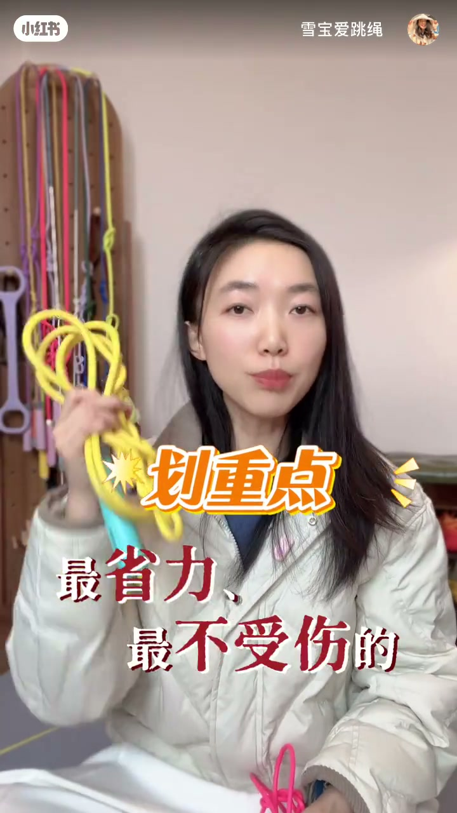
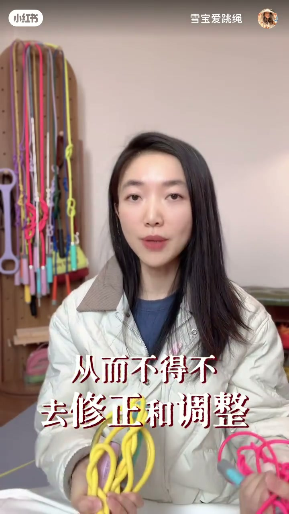
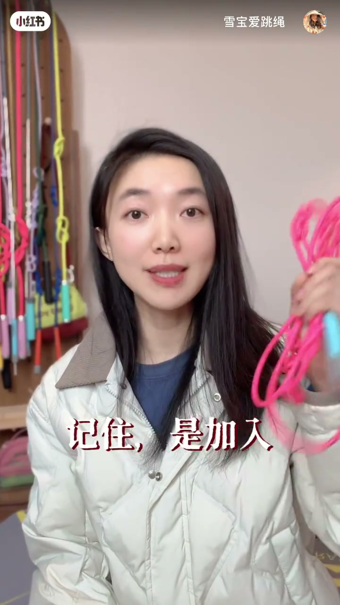

内容要点
知识结构
开场自问「入门还是进阶」后直接定性：8+6 是经典王炸组合，更是一套系统程序；数字代表绳子粗细与重量（8mm / 6mm）。
有分量、少绊绳；核心任务是逼你用最省力、最不受伤的方式跳。甩手臂、跳得老高、核心松散、小腿代偿等问题会被立刻放大，从而不得不修正到高效、经济、安全。
动作打磨后再加入更轻快的 6mm「速度赤兔」，在跳对跳稳的基础上体验飞扬感；强调是加入，不是换掉 8mm。
心急追数字会在错误姿势上重复，效率低还易受伤退场；跳了两三年仍找不到核心发力的「资深新手」，往往也是没重质就追量。真正意义：能跳对、能跳多。
新手别着急，可先关注主页一键领取跳绳心法、姿势教学与跟练计划；问题欢迎评论区留言。
别乱买、别瞎跳：先用 8mm 把动作发力磨对，再加入 6mm 提速；顺序是「先跳对，再跳多」。
图文实录
开场：8+6 到底是入门还是进阶
视频以标题「跳绳王炸组合 · 8+6 的真实作用」开场。作者双手各持一根绳（画面里常见黄绳与粉绳），先抛出观众常问的定位问题：这是入门还是进阶？她的答案是——8+6 都是「妥妥的经典王炸 CP」，但今天要把「为什么」聊透。
关键澄清立刻跟上：记住 8+6 不仅仅是两根绳子，它是一套系统的程序。紧接着给出计量定义——「首先 8 和 6 是绳子的直径，它不是长度，代表着粗细和重量」：8 就是 8 毫米，6 就是 6 毫米。这一定义把「乱买」拦在门外：先弄清买的是什么规格，再谈怎么练。
8 毫米定海绳：有分量的「磨刀石」
作者把 8 毫米绳比作「定海绳」：有点分量，能更好地稳定轨迹，新手更不容易绊绳（Whisper 记作「扮绳」）。但更重要的不是「好跳」，而是它的核心任务——逼着练习者学会用最省力、最不受伤的方式去跳，负责打磨动作基本功。
她点名几类典型错误：甩手臂、跳得老高、核心松散、小腿代偿（转录「小腿太长」，按作者笔记文案校正）等等。这些问题在 8 毫米绳面前会被立刻放大，让人迅速感觉到累和不对劲，从而不得不修正和调整。因此作者主张：只有经过 8 毫米的严格打磨，把动作发力修正到高效、经济、安全之后，才进入下一步。


加入 6 毫米：速度绳，不是替代品
基础打磨完成后，再「加入」6 毫米绳。作者特意卡住用词：记住是加入，不是替代。6 毫米被称作「速度赤兔」（转录「赤牢」按语境校正）——更轻快，能让人在已经跳对、跳稳的基础上体验飞扬的感觉。画面上她举起粉绳配合字幕，把「加入」二字钉死，避免新手把 6mm 当成可以跳过打磨阶段的捷径。

避坑：资深新手与六字心法
转折很直接：很多人一上来就想跳多、追求数字，结果基础没打好，在错误姿势上不断重复——不仅效率低，还非常容易受伤退场。作者举例：跳绳两三年的姐妹，仍始终找不到核心发力去跳的感觉；这类人被她称作「资深新手」——没有重质就去追量（转录「重智」）。
这与标题里的「六字心法：别乱买，别瞎跳」同一条逻辑线：工具顺序要对（别乱买规格与用法），训练顺序要对（别瞎跳追量）。
收尾：主页礼物包与互动
面向仍不知道怎么练的新手，作者说别着急：先关注主页，可一键查收跳绳心法、姿势教学和跟练计划——「妥妥的新人大礼包」。有问题欢迎评论区留言，也欢迎常来直播间坐坐，最后以「拜拜」收束。